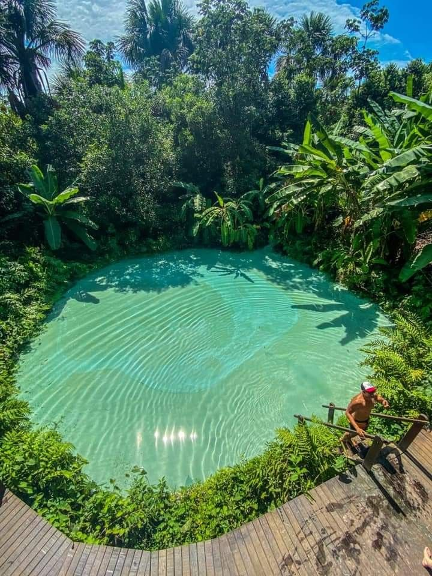

Região Norte
Jalapão
No quesito férias na natureza, o Jalapão é a última bolacha do pacote. Até a virada do milênio, os únicos forasteiros que se aventuravam por ali eram jipeiros. O turismo mais comercial começou apenas em 2001, quando a Korubo montou seu acampamento e adaptou um caminhão para transportar grupos. O número de visitantes, porém, ainda é muito pequeno e não altera em nada a densidade demográfica da região. Não há hotéis — só umas poucas pousadas num ou noutro vilarejo. Apesar de muito falado, o Jalapão é pouco explicado. Aqui vai minha contribuição.

O Jalapão ocupa uma área de 34 mil km² (para comparar: Sergipe tem 22 mil km²) no centro-leste do Tocantins, fazendo fronteira com Bahia, Piauí e Maranhão. A principal porta de entrada da região é a cidadezinha de Ponte Alta do Tocantins, que está a 190 km da capital, Palmas, por estrada asfaltada. Dali em diante, só estradas de terra. Itinerários circulares usam a cidade de Novo Acordo, a 110 km de Palmas (também por asfalto) para entrar ou sair. A maior quantidade de atrativos está em torno do povoado de Mateiros, a 160 km de Ponte Alta (ou 240 km de Novo Acordo). Os povoados de Ponte Alta e São Félix do Tocantins (a 90 km de Mateiros e 150 km de Novo Acordo) também servem como base para visitar outros atrativos.

Quando ir ao Jalapão?
Ao contrário do que eu imaginava, o Jalapão é visitável o ano inteiro. Entre maio e setembro quase não chove e o céu estará azulzíssimo (pelo menos até as queimadas do Cerrado começarem, em meados de setembro). Para ver o capim-dourado em seu estado dourado, visite em setembro. Durante a época seca os dias são quentes (quanto mais perto de setembro, mais quente) e as noites, frescas. Na época chuvosa faz menos calor de dia, mas em compensação de noite não esfria. Leve em conta que os grupos são pequenos e, em feriados e nas férias, lotam com antecedência.
Jalapão
When it comes to vacations in nature, Jalapão is the last piece of cake. Until the turn of the millennium, the only outsiders who ventured there were jeep drivers. More commercial tourism only started in 2001, when Korubo set up its camp and adapted a truck to transport groups. The number of visitors, however, is still very small and does not change the demographic density of the region in any way. There are no hotels—just a few inns in one village or another. Despite being talked about a lot, Jalapão is little explained. Here's my contribution.
Jalapão occupies an area of 34,000 km² (to compare: Sergipe has 22,000 km²) in the center-east of Tocantins, bordering Bahia, Piauí and Maranhão. The main gateway to the region is the small town of Ponte Alta do Tocantins, which is 190 km from the capital, Palmas, by paved road. From then on, only dirt roads. Circular routes use the city of Novo accord, 110 km from Palmas (also by asphalt) to enter or leave. The greatest amount of attractions is around the village of Mateiros, 160 km from Ponte Alta (or 240 km from Novo accord). The towns of Ponte Alta and São Félix do Tocantins (90 km from Mateiros and 150 km from Novo accord) also serve as a base for visiting other attractions.
When to go to Jalapão?
Contrary to what I imagined, Jalapão can be visited all year round. Between May and September it hardly rains and the sky will be blue (at least until the Cerrado fires start in mid-September). To see golden grass in its golden state, visit in September. During the dry season the days are hot (the closer to September, the hotter) and the nights are cool. In the rainy season it is less hot during the day, but it does not get cold at night. Keep in mind that the groups are small and, on holidays and vacations, they fill up in advance